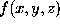

Command line options and parameters
SOLVATE receives all input parameters from the command line, so
it can easily be used within shell-scripts.
Available options are:
solvate [-t thick] [-r radius] [-n ngauss] [-ug] [-ub]
[-s] [-v] [-bulk] [-w] [-ion] [-psf] [infile] outfile
- thick
-
specifies the minimum water shell thickness in Angstrom (default: 10.0).
Nowhere will the solute be closer to the surface of the solvent
than this value. Attention: Values smaller than 3.0 may confuse
SOLVATE.
- radius
-
specifies the maximum boundary curvature radius of the
solvent surface in Angstrom (default: 100000.0). A very large
value (e.g., the default value) means that the surface can (but not
necessarily does) have rather flat parts. Smaller values generate
`rounder' solvent volumes, and, as a consequence, more solvent
molecules. The value of radius should not be considerably
smaller than the size of the solute.
- ngauss
-
specifies the number of gaussians to be used
to define the solvent surface (default: 1). The more detailed
irregular features of the surface are required,
the more gaussians should be used. Consequently,
thin water shells typically require more gaussians than thicker ones.
Note, however, that a large number may slow down subsequent
molecular dynamics simulations. Typical values for ngauss
are five to ten.
- -s
-
If the -s option is set, the file surface_stat is
written, which contains (i) a set of grid points specifying
the solvent surface, (ii) the error statistics for the distance
estimate described above, and (iii) information about how many
water molecules belong to which group of molecules.
- -v
-
If the -v option is set, the file volume_stat is
written (attention: this file may become quite large!),
which lists for every grid point within the solvent volume
its x-,
y-,
and z-coordinate,
the value  of the density function at this
point,
its accurate distance and the approximate distance (which is the
efficient estimate used in subsequent MD-simulations) from the
solute surface, as well as
an approximate value of the curvature of the surface at the point
next to
 (which also is an efficient estimate that can be used
in MD-simulations).
(which also is an efficient estimate that can be used
in MD-simulations).
- -ug
-
If the -ug (use gaussians) option is
set, all steps required for
the computation of the approximate density function f
(STEPs 2 and 3)
are skipped, and the required parameters for defining f
are read from the file gaussians.lis instead, which
is always written when f is computed.
The reason for this option is that STEP 3 is quite time
consuming.
- -ub
-
If the -ub (use boundary) option is set,
all steps required for
the computation of the boundary description through f
(STEPs 2, 3, and 4)
are skipped, and the required parameters for defining f
and the scale factor s
are read from the file boundary.lis instead, which
is always written after the boundary distance from the solute has been
adjusted (STEP 4).
The reason for this option is that STEP 4 is quite time
consuming.
- -bulk
-
The -bulk option suppresses output of buried water molecules,
i.e., only bulk water is written to the output pdb-file.
- -w
-
The -w option suppresses output of the solute,
i.e., only water molecules (usually with a hole in the middle, where the
solute is located) and ions are written to the output pdb-file.
- -ion
-
If the -ion option is set, STEP 9 is carried out to place
sodium and chloride ions into the solvent according to
a isotonic Debye-Hückel density. If the option is not given,
STEP 9 is skipped, and no ions are output.
- -psf
-
If the -psf option is set, SOLVATE writes
an X-PLOR-script mkpsf.inp" which can be used to
generate a structure file for the solute/solvent-system,
as required for subsequent MD-simulations (the command
xplor < mkpsf.inp will do the job).
- infile
-
specifies the name of the
input pdb-/psf-file of the solute.
If the -ion option is set, both pdb- and psf-file are required;
otherwise only the pdb-file is needed. No extension must be given!
The input file name may be omitted, in which case SOLVATE
creates a pure spherical water droplet centered at the origin.
- outfile
-
specifies the name of the output file for
the solute/solvent-system. No extension should be given.
The command line options can be given in arbitrary sequence.
Helmut Grubmueller
Wed Jun 19 19:00:00 MET DST 1996